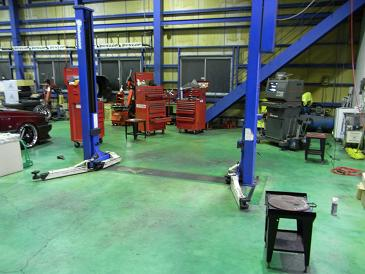 アライメント計測を行っているショップはたくさんあるものの、 同じアライメントを行うならこの頃の車に精通しているショップのほうが良いナァ･･･と。 まぁ、どこでも行う操作は同じなので精神的なものが大きい（笑
|
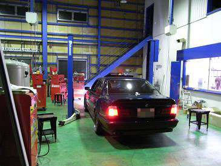 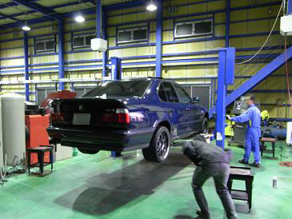 リフトで上げて、その横にある台の上に接地させるようだ。 リフトで上げるとたいてい何か見つけてしまうのだが、今回は何もなかった＾＾ よし、頑張って
|
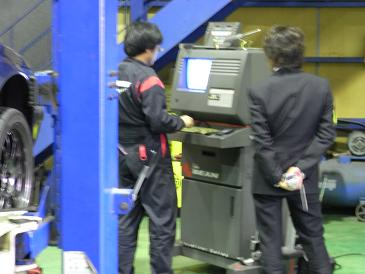 アライメントテスター本体 この機械に車名を打ち込むと、その車の規定値が出るようだ。
|
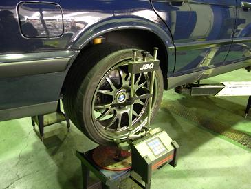 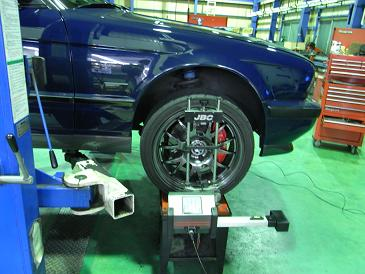 そして、各車輪に数値を測る機械を取り付けていた。 この機械と本体は有線で繋がっていた。 取り付け具合で数値変わったりしないのかなぁ・・・？
|
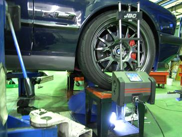 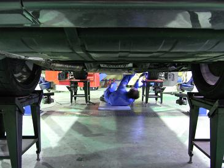 そして、接地させて運転席に人が乗り、エンジンをかけていた。 実際の状況に近づけるためだそうだ。 そして、本体に表示された数値を見ながら調整して規定値へともっていくのだ。
|
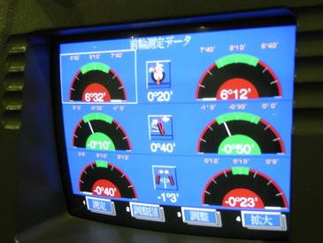 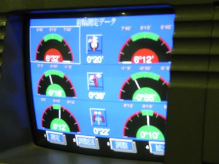 左が調整前の値 右がおおまかな調整後の値 見事にトーアウトになっている。これではハンドルが取られるハズだ。。 調整は、トーのみでリヤは何も調整ができない。
|
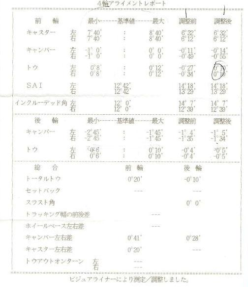 これが測定結果だ。 それぞれの基準値と調整前、調整後の数値が記載されている。 フロントのキャスター、キャンバー共に基準値内だが、キャンバーは左右で差があるようだ。 トーは調整されているので左右同じ値になっている。 調整後は、ハンドルがとられにくくなっている。 そして、問題は調整の出来ないリヤのトーなのだ。 本来ならば、値はプラス（トーイン）なのだがマイナス（トーアウト）になっている。 これがリヤがあまり安定しない原因のようだ。 しかし、目視ではどう見てもトーインになっているように見えるんだけどなぁ。。 調整ができないので、このままどうすることもだきないのだが。。 う～ん、とりあえずトレーリングアームのブッシュ交換か？！ まだまだ理想のハンドリングへの道程は険しいようだ。
|
2010/11/23 追記 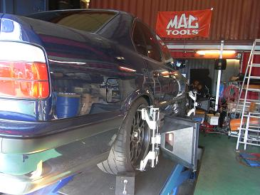 リアのトレーリングアームのブッシュ交換をしてから、アライメントをとっていなかったので計測しました。 結果、左右共に－0.4でトーアウトだった数値が基準値内の0.8になっていました。 フロントのアッパーマウントも純正に交換したし、これで足回りはひと段落だ。 しかし、まだステアリングフィールに違和感を感じるのは、どうやらステアリングキアボックスの不良のようだ。 ギアボックスのプレッシャーポイントを少し調整してみたが、まだかなりガタが出ている。 オイルも滲んでるし… これも年内になんとかできれば・・・と思っている。 まだまだ理想のハンドリングへの道は険しいようだ。 |